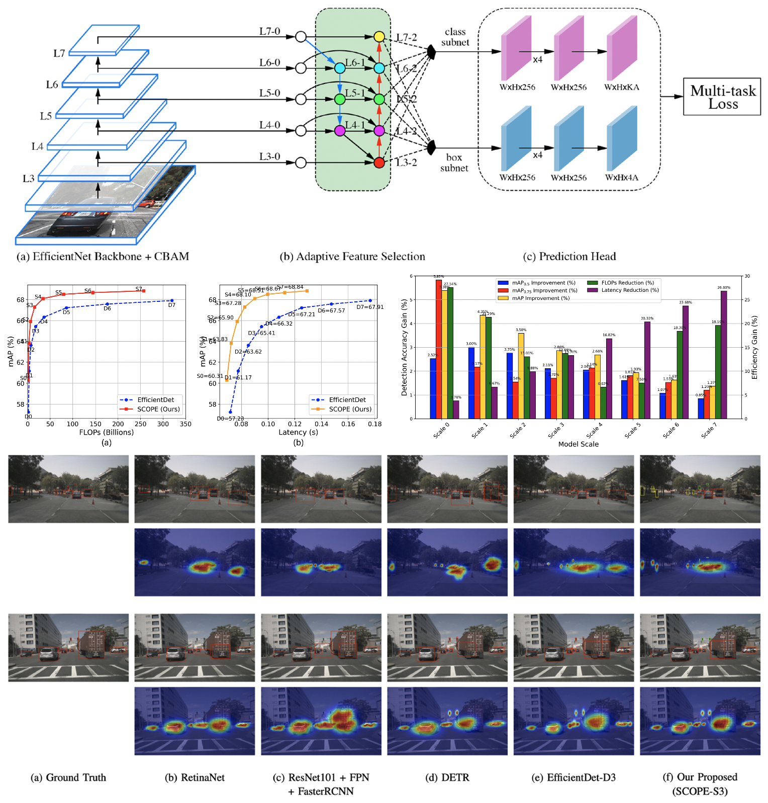
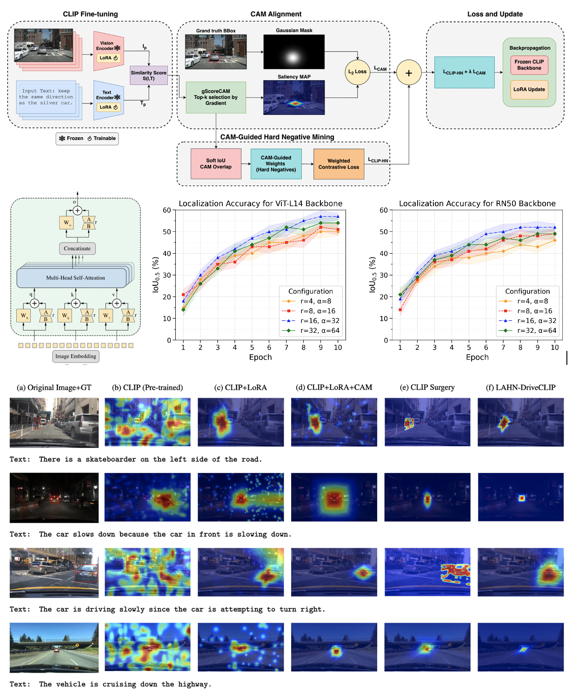
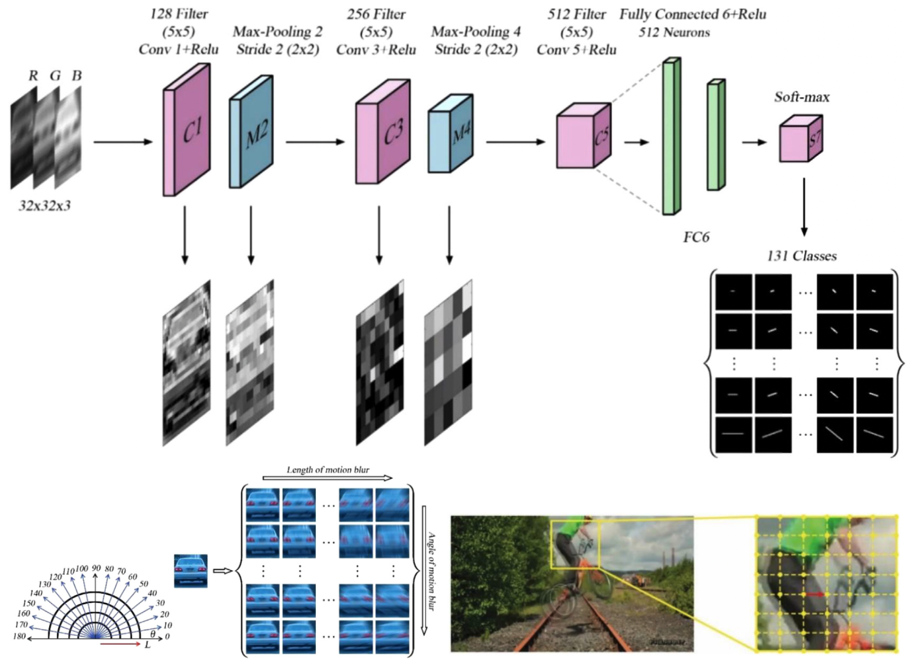
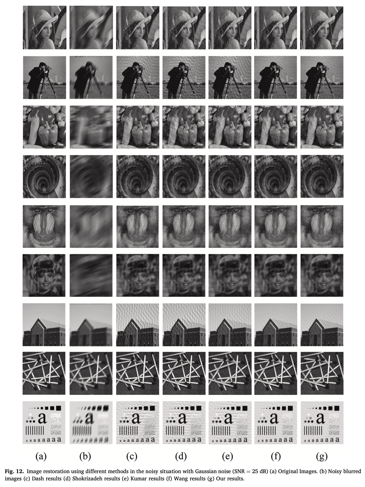
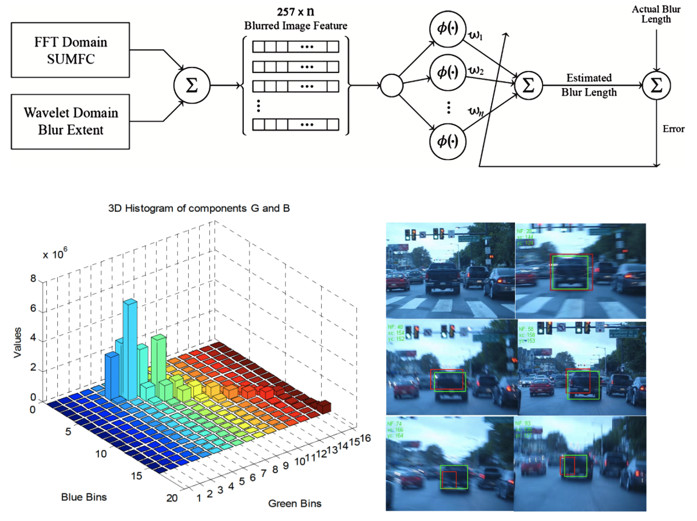
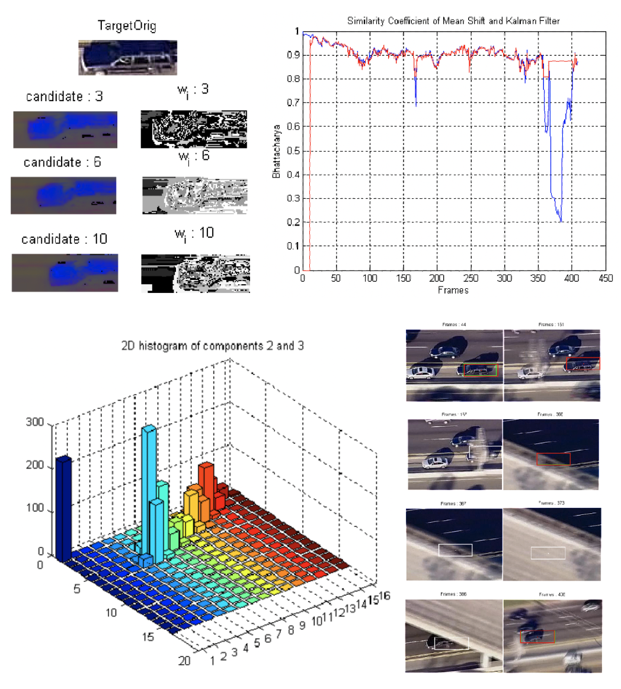

Iman Iraei
I am a Master of Science student in Electrical and Computer Engineering at Concordia University, advised by Prof. M. Omair Ahmad and Prof. M. N. S. Swamy. My research focuses on computer vision, object detection, vision-language models, and autonomous driving perception systems. I am particularly interested in developing efficient and robust deep learning architectures that improve perception performance while maintaining real-time operation in safety-critical environments.
How can intelligent perception systems become more accurate, efficient, and reliable for real-world autonomous driving?
My current work explores efficient object detection and localization-aware vision-language learning for autonomous driving. I study how spatial-channel attention mechanisms, adaptive feature fusion, and multimodal representations can improve model robustness under challenging conditions such as small, distant, and occluded objects.

Highlights & News
- Jun 2026 Submitted SCOPE: Spatial-Channel Optimization with Efficient Adaptive Fusion for Real-Time Object Detection in Autonomous Vehicles.
- May 2026 Submitted LAHN-DriveCLIP: Localization-Aware CLIP Adaptation with CAM-Guided Hard Negative Mining for Autonomous Driving.
- Apr 2026 Presented DriveCLIP: Localization-Aware CLIP for Autonomous Driving at the 10th Annual ECE Graduate Student Research Conference, Concordia University.
- Jan 2025 Started my M.Sc. program in Electrical and Computer Engineering at Concordia University.
Research Interests
Computer Vision · Object Detection · Vision-Language Models · Multimodal Learning · Autonomous Driving · Efficient Deep Learning · Visual Object Tracking
Selected Publications

SCOPE: Spatial-Channel Optimization with Efficient Adaptive Fusion for Real-Time Object Detection in Autonomous Vehicles
Submitted to IEEE Transactions on Intelligent Transportation Systems (T-ITS), 2026
@article{iraei2026scope,
title={SCOPE: Spatial-Channel Optimization with Efficient Adaptive Fusion for Real-Time Object Detection in Autonomous Vehicles},
author={Iraei, Iman and Ahmad, M. Omair and Swamy, M. N. S.},
journal={Submitted to IEEE Transactions on Intelligent Vehicles},
year={2026}
}

LAHN-DriveCLIP: Localization-Aware CLIP Adaptation with CAM-Guided Hard Negative Mining for Autonomous Driving
Submitted to Robotics and Autonomous Systems, 2026
@article{iraei2026lahndriveclip,
title={LAHN-DriveCLIP: Localization-Aware CLIP Adaptation with CAM-Guided Hard Negative Mining for Autonomous Driving},
author={Iraei, Iman and Ahmad, M. Omair and Swamy, M. N. S.},
journal={Submitted to Robotics and Autonomous Systems},
year={2026}
}

A Motion Parameters Estimating Method Based on Deep Learning for Visual Blurred Object Tracking
IET Image Processing, 2021
@article{iraei2021motion,
title={A Motion Parameters Estimating Method Based on Deep Learning for Visual Blurred Object Tracking},
author={Iraei, Iman},
journal={IET Image Processing},
year={2021}
}

A New Approach to Enhance the Estimation of Motion Blur Parameters in Blurred Images
Journal Paper, 2020
@article{iraei2020blur,
title={A New Approach to Enhance the Estimation of Motion Blur Parameters in Blurred Images},
author={Iraei, Iman},
year={2020}
}

Object Tracking in Blurred Images with Mean Shift and Wavelet Features
International Conference on Pattern Recognition and Computer Vision, Rome, Italy, 2018
@inproceedings{iraei2018tracking,
title={Object Tracking in Blurred Images with Mean Shift and Wavelet Features},
author={Iraei, Iman},
booktitle={International Conference on Pattern Recognition and Computer Vision},
address={Rome, Italy},
year={2018}
}

Object Tracking with Occlusion Handling using Mean Shift, Kalman Filter, and Edge Histogram
IEEE International Conference on Pattern Recognition and Image Analysis, Guilan, Iran, 2015
@inproceedings{iraei2015occlusion,
title={Object Tracking with Occlusion Handling using Mean Shift, Kalman Filter, and Edge Histogram},
author={Iraei, Iman},
booktitle={IEEE International Conference on Pattern Recognition and Image Analysis},
address={Guilan, Iran},
year={2015}
}
Research Projects
- SCOPE — Designed a latency-aware adaptive fusion framework for efficient real-time object detection in autonomous driving.
- LAHN-DriveCLIP — Developed a localization-aware vision-language framework based on CLIP and LoRA adaptation for autonomous driving.
- DriveCLIP — Presented localization-aware CLIP adaptation for autonomous driving scenes at Concordia GSRC.
- Music Genre Classification — Extracted MFCC-based spectral features and compared machine learning classifiers for audio classification.
- Chest X-ray Image Classification — Studied CNN-based classification using ResNet18, AlexNet, and MobileNetV2.
Recognition & Awards
- Awarded Concordia University Graduate Fellowship.
- Ranked top 1% among Electrical Engineering students at Tehran Polytechnic.
- Ranked 2nd among 32 participants in the First National Robotic Competition at IT Academy in the Rescue Robot category.
- Ranked 3rd among 45 participants in the First National Robotic Competition at Shahrood University of Technology in the Sweeper Robot category.
Teaching Experience
- Teaching Assistant — ELEC 342, Discrete-Time Signals and Systems, Concordia University.
- Teaching Assistant & Marker — ELEC 311, Electronics I, Concordia University.
- Teaching Assistant — Circuit Analysis II and Signals and Systems, Tehran Polytechnic.
- Lecturer — Image Processing using MATLAB, Signals and Systems, and Signal Processing using MATLAB.